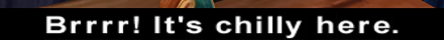
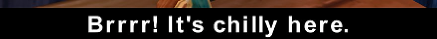
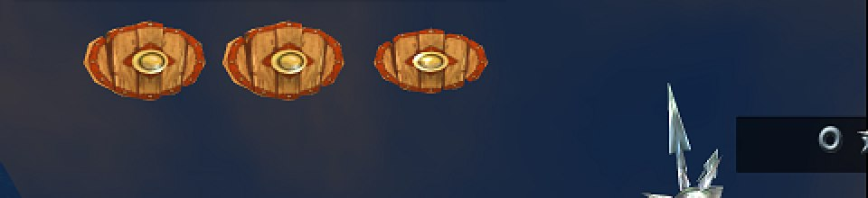
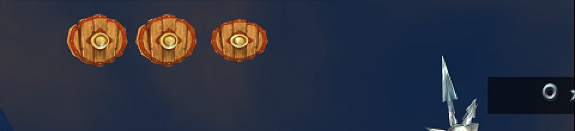

xxl_widescreen2d at a glance
The game draws its 2D for a 4:3 screen and widens it to fit wider ones: at 16:9, letters, icons, HUD shields and plates come out a third too wide. xxl_widescreen2d.asi draws them at their true shape, with every position left where the game puts it.
What it changes
- Text: dialogues, hints, menus and the font's button icons at their true shape. Lines hold more words.
- HUD models: health shields, the helmet, combo columns unstretched in their places; rows close up.
- Plates: the HUD's see-through plates drawn narrower about their anchored edge, with what sits on them coming in too.
- Sharper font: the text font's pages swapped for 4x Arial Bold ones, one per language pack.
- Action icons: the font's action icons redrawn from the designer's Figma plate.
What it doesn't change
- The 3D field of view stays with the QoL patch (
enable_wide_fov), which is still needed. - Positions: x is still the game's x times the aspect, so nothing moves, it only stops being stretched.


Design principles
Independent of the co-op mod. It works with the plain game and with xxl_coop.asi, and neither needs the other.
Why: a general game fix goes in its own asi (the same rule as xxl_timerfix.asi).
Shapes, not layout. Only widths are corrected. Anchors, places and alignment are the game's, so every screen (menus, HUD, dialogues, the merchant) keeps the layout its designers made.
Right in any viewport. The squeeze is worked out from the actual viewport and camera, so it is right at any aspect and in each half of the co-op split screen.
Assets are optional. Without the PNGs in Game Files\xxl_widescreen2d\, the font simply stays the game's own.
Keep the original's character. Glyphs sit where the old ones did (texture coordinates untouched), quotes stay straight as in the original, and the icons keep their originals' shapes on the designer's plate.
About this doc
It works like the co-op design doc: / searches, E edits the open page, Ctrl+S saves into coop/docs/design/widescreen2d-design.html.
It's updated only at milestones you call, with a row added to the milestone log.
Text at its true shape
The game widens every glyph by aspect × 0.75: 1 at 4:3, 1.33 at 16:9. The asi makes that product 1 at any aspect.
- It covers dialogues and subtitles, menus, HUD texts, co-op hints, and the font's button icons, which are now round again.
- Centred and right-aligned texts keep their anchor, and lines simply hold more words.
- It was asked for by the user's designer: dialogue text and icons looked about 30% too wide at 16:9.
HUD models without the stretch
The HUD's 3D models (health shields, helmet, combo columns) are drawn through an orthographic camera spread over the whole screen, so they stretch with it. Each model is squeezed about its own position for the draw, then put back.
- Single models keep their centres, so they still sit in their 2D plates.
- Rows (a hero's shields) are also closed up towards their outer end, so a row of narrower shields doesn't look gappy.
- The co-op mod's P2 HUD goes through the same draw, so both HUDs get it.


Plates
The see-through HUD plates (Romans to beat, helmets, laurels) are sized as a share of the screen, so they stretch too.
- A stretched plate narrower than 0.95 of the screen is drawn (4/3) / aspect as wide, about its anchored edge. Full-width bars are left alone.
- What sits on a plate (its text, small icons, HUD models) is drawn that much nearer the anchor, so it stays on the plate.
Sharper font
The game's text font, "arial24-windows" (28 px cells on a 256 page), blurs when stretched to a modern screen. Its pages are swapped for 4x ones (1024 × 1024) drawn from Arial Bold on the same layout.
One page per language pack
| Pack | Language | Its own characters |
|---|---|---|
| 00 | French | œ, à… |
| 01 | English | en dash, ellipsis |
| 02 | German | umlauts, ß |
| 03 | Spanish | ¡ ¿ ñ… |
| 04 | Italian | È, Ì… |
The asi finds which pack is loaded from a character only that pack has, and swaps in arial24-windows0_LL.png and arial24-windows1_LL.png.
How the pages are made
- The English table is the user's Figma layout (file "d e s i g n", page "AoXXL co-op"): Arial Bold 24 px nodes placed over the original page.
- The other packs reuse the English offsets for shared characters. Their own characters sit on the common baseline, placed to cover the most of the old glyph.
- Pages are rendered locally (
fonts/tools/render.cs), not exported from Figma. Figma's Arial text equals a GDI+ path with its baseline at y + 0.9167 × size. - The old cell borders and their corner marks are cleared; they used to show as faint lines between letters.
Straight quotes (' and "), as in the original. Curly ones made "It's" read with an opening quote.
The slight shimmer of small text (only in the co-op merchant) isn't worth fixing. The D3D9 driver drops the mipmaps; revisit if text shimmers at 1080p and above.
Action icons
The font's 13 action icons (action, Dogmatix, jump, pause, the four directions, targeted attack, grab, launch Obelix, confirm, cancel) are redrawn as vectors: the designer's 24 px plate (gradient fill, bevel stroke, green and yellow glows), with each glyph traced from the original.
- The icons are in the Figma frame "Action icons". They go onto both font pages of every pack. Which page holds which icon differs per pack: French 8 on page 0, English 13, German and Spanish 9, Italian 10.
- Where they show: xxl_coop.asi replaces the game's icons with each player's real buttons in most texts. The redrawn ones show where it doesn't: the title's "Press Validate", actions with no mapping, and the game without the co-op asi.
Updating the icons
- Export the Figma frame "Action icons" as PNG at 4x (1456 × 96), keeping its layout: 13 plates of 24 px at 28 px steps.
- Run
powershell -ExecutionPolicy Bypass -File coop\widescreen2d\fonts\tools\update_icons.ps1 EXPORT.png. It rebuilds both pages of all five packs and copies them toGame Files\xxl_widescreen2d. - To go back:
-Originalrestores the game's own icons, upscaled;-Undorestores the icons before the last run.
With xxl_coop.asi
Neither mod needs the other. Where co-op draws its own 2D, it checks whether the widescreen asi is loaded and adapts.
| Co-op piece | With xxl_widescreen2d.asi |
|---|---|
| Co-op hints | Placed with the game's actual text width factor, so they fit with or without the asi. The hint plate is pre-widened, since the asi narrows plates. |
| Helmet counter (side by side) | Centred by the middle of its plate as the asi draws it (round 123) |
| x3/x10 sign, spy's requirement | Each centred on its own plate, with or without the asi (round 125) |
| Side-by-side HUD sizes | Unchanged: 3/4 middle pieces and the six-shield shrink, asi or not (round 121) |
| P2 HUD models | Squeezed by the asi like P1's (same draw) |
| Co-op button icons | No conflict: co-op's icons live on their own font page in a free slot |
Round 120 tried full-size middle pieces and no six-shield shrink under the asi. The user preferred the smaller, less cluttered layout, so the HUD sizes don't depend on the asi.
Files and tools
| Path | What |
|---|---|
coop/widescreen2d/widescreen2d.cpp, build.bat | The asi's source and build |
Game Files/xxl_widescreen2d.asi | Deployed asi |
Game Files/xxl_widescreen2d/arial24-windowsN_LL.png | Font pages: N 0/1, LL the pack 00-04 |
Game Files/xxl_widescreen2d.log | A few lines per run: pack found, pages swapped |
coop/widescreen2d/fonts/ | Page sources: spec_LL.tsv (Figma node places), cells_LL.txt, README.txt |
fonts/tools/render.cs | Page renderer and checks (page, check, ink, icons) |
fonts/tools/update_icons.ps1 | Puts a Figma icon export into every page |
coop/tools/export_game_icons.py | Exports the original pages from a pack (xxGLOC.KWN) |
To test another language, copy its xxGLOC.KWN over 01GLOC.KWN for the run and restore it afterwards.
Open items
| Item | State |
|---|---|
| Designer's tweaks to the action icons | pending |
| French / German / Spanish / Italian tables in Arimo Bold: switch to Arial? | your call |
| English table: retype curly quotes as straight (" at x 24, ' at x 77); the pages already use straight | your call |
| Mipmaps dropped by the driver: text shimmer at 1080p+? | revisit if seen |
Milestone log
One row per update, newest first.
| Date | Covers up to | What changed in the doc |
|---|---|---|
| 2026-10-22 | Round 127, commit 3a8122f | Doc created from rounds 117-127, the asi's source notes and the fonts README. |